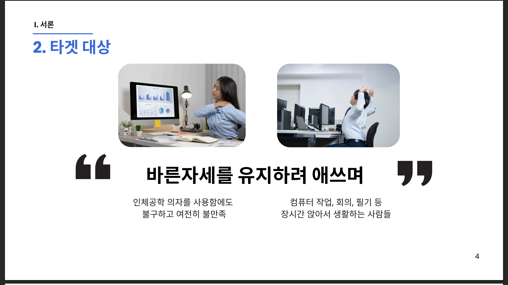
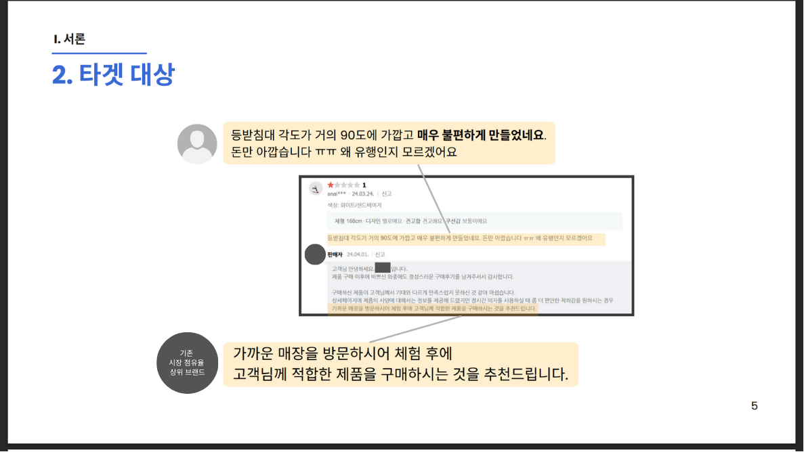
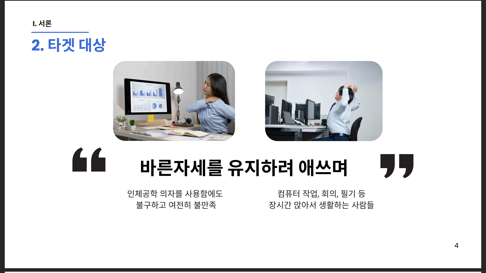
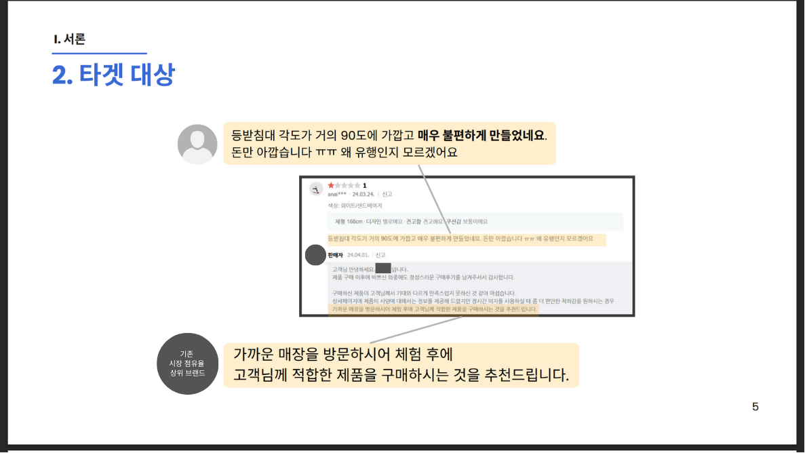

당신의 편안함을 위한 FIT:ON
"평균의 함정에서 벗어난 진짜 인체공학적 솔루션을 제안합니다."
마케팅적 수식어를 넘어 정량적 데이터와
사용자 경험(UX)을 결합하여
차세대 맞춤형 의자 큐레이션 비즈니스 모델을 기획했습니다.
🚀 Business Strategy Pipeline
기존 '인체공학' 의자가 단순한 조절 기능을 넘어 실제 신체에 안락함을 주는지 의구심을 가졌습니다. 특허 자료 분석을 통해 조절 기능의 이점과 별개로 실제 인체공학 등록 여부의 간극을 확인하고, 국내대표 의자 제조사 리뷰 분석을 통해 "90도 각도의 불편함"이라는 실질적 페인포인트를 포착했습니다.
 

▲ [3-5p] 특허 분석 및 실제 사용자 불만족 데이터를 통한 문제
정의


▲ [3-5p] 특허 분석 및 실제 사용자 불만족 데이터를 통한 문제
정의
ViTPose와 Meshroom 기술을 활용해 사진 데이터로부터 정밀한 스켈레톤과 3D 메쉬를 추출하는 전체 프로세스를 설계했습니다. 데이터 전처리부터 체형 군집화(Clustering) 모델링까지, 기술이 실제 서비스로 연결되는 로직을 구체화했습니다.
Ipsos 마케팅 리서치 경험을 이식하여, 고객이 서비스를 인지하고 결과에 확신을 갖는 여정을 설계했습니다. 정보의 과잉 상황에서 개인 맞춤 가이드를 제공하고, 정확한 분석 리포트를 통해 서비스 신뢰도를 극대화하는 방안을 제시했습니다.
단순 측정을 넘어 거북목, 둥근 어깨, 골반 기울기 등 비대칭 정도를 수치화(약 3-15도 편차)하여 상세 분석합니다. 특히 사용자의 신체 분절 길이를 평균 여성 데이터와 비교하여 하체 중심 체형 여부 등을 정밀하게 진단합니다.
'사이즈오브[체어]'와 같은 제작 브랜드와의 파트너십을 통해 번거로운 측정 과정을 개선하고 수익 모델을 구체화했습니다. 기존 글로벌 맞춤 브랜드 대비 자동화된 측정 및 보고서화 기능의 우위를 점하여 시장 경쟁력을 확보했습니다.
📊 Final Conclusion
"아이디어를 데이터로 증명하고 비즈니스로 구체화하다"
철저한 리서치와 논리적 설계를 통해
한국경제신문사 사장상을 수상하며
비즈니스 분석가로서의 잠재력을 입증한 프로젝트입니다.
📥 전체 프로젝트 기획안 확인
상세한 시장 리서치와 기술 아키텍처가 담긴 전체 PDF 자료를 확인하세요.
📄 FIT:ON 기획 발표자료 다운로드 (PDF)